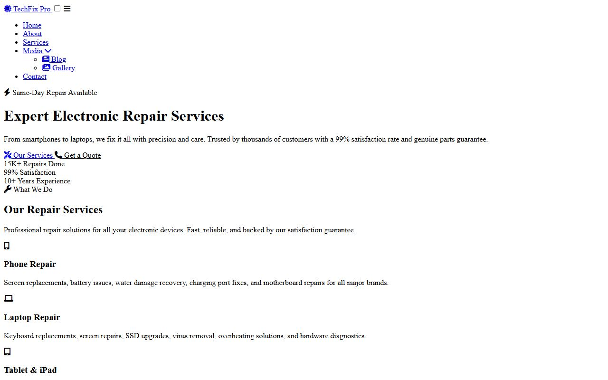

Lesson 10 · Building the Pages
Home Page, Part 1: The Hero
The “hero” is the big, full-screen welcome area at the top of the Home page: a circuit-board photo, a dark blue tint, a headline, two buttons and three statistics. It teaches one of the most useful CSS skills: stacking layers on top of each other.
- About 60 minutes
- Edits:
index.html
By the end of this lesson you will be able to
- Write page-specific CSS in a
<style>block. - Stack layers using
position: relative/absolute,insetandz-index. - Use a background image with
background-size: cover, and tint it with a gradient. - Make text resize smoothly with
clamp(). - Centre content in both directions with flexbox.
Where the Home page CSS goes
From now on, each page's own CSS goes in that page's <style> block, in the <head>. Open index.html and find:
<head><style>
/* Page-specific styles go here */
</style>Delete the comment line /* Page-specific styles go here */. In every step below, “add to the <style> block” means: paste just above </style>, below any CSS you added before.
About indentation
Code in this guide is shown starting at the left edge. In your file, the CSS sits inside <style> and the sections sit inside <body>, so they will be indented a little more. Spaces never change how a page works, so don't worry about matching them exactly. Shift + Alt + F tidies everything up for you.
Add the hero's three layers (HTML)
In index.html, delete the line <!-- PAGE CONTENT GOES HERE --> and type this in its place, between the navbar and the footer:
</nav> and <!-- Footer --><!-- Hero Section -->
<section class="hero" id="home">
<div class="hero-bg"></div>
<div class="hero-overlay"></div>
<div class="hero-content">
<!-- hero text and buttons go here (next steps) -->
</div>
</section>Three empty boxes, which will become three layers stacked on top of each other:
.hero-bg, the photo, at the back..hero-overlay, a semi-transparent dark blue tint over the photo, which makes the white text readable..hero-content, the text and buttons, at the front.
The id="home" gives the section a unique name. A link to #home would jump straight to it.
Stack the layers (CSS)
Add to the <style> block:
<style> block of index.html/* ============================================
Hero Section with Background Image
============================================ */
.hero {
position: relative;
min-height: 100vh;
display: flex;
align-items: center;
justify-content: center;
text-align: center;
padding: 120px 1.5rem 100px;
overflow: hidden;
}
.hero-bg {
position: absolute;
inset: 0;
background: url('https://images.unsplash.com/photo-1518770660439-4636190af475?w=1920&q=80') center/cover no-repeat;
z-index: 0;
}
.hero-overlay {
position: absolute;
inset: 0;
background: linear-gradient(135deg, rgba(15, 23, 42, 0.88) 0%, rgba(15, 23, 42, 0.75) 50%, rgba(37, 99, 235, 0.65) 100%);
z-index: 1;
}
.hero-content {
position: relative;
z-index: 2;
max-width: 800px;
}The layering technique
.hero { position: relative; }makes the hero the frame that its absolutely-positioned children are placed inside..hero-bgand.hero-overlayuseposition: absolute; inset: 0;.inset: 0is shorthand fortop: 0; right: 0; bottom: 0; left: 0;, which stretches each layer to fill the whole hero.z-indexsets the stacking order: photo0(back), tint1, content2(front). The content needsposition: relativefor itsz-indexto work.overflow: hiddencuts off anything that pokes outside the hero.
The background shorthand
background: url('…') center/cover no-repeat; packs four settings into one line: the image address, its position (center), its size (cover means scale it to fill the box completely, cropping the edges if needed) and no-repeat (don't tile it).
The full-screen centred box
min-height: 100vh makes the hero at least as tall as the browser window. display: flex; align-items: center; justify-content: center; puts the content in the exact centre, both vertically and horizontally. The top padding of 120px keeps the content clear of the fixed navbar.
Save and look: you should see a full-screen circuit-board photo with a dark blue tint.
Add the hero text, buttons and stats (HTML)
Replace the comment <!-- hero text and buttons go here (next steps) --> with:
<div class="hero-content"><div class="hero-badge fade-in">
<i class="fas fa-bolt"></i>
Same-Day Repair Available
</div>
<h1 class="fade-in stagger-1">Expert Electronic <span>Repair Services</span></h1>
<p class="fade-in stagger-2">From smartphones to laptops, we fix it all with precision and care. Trusted by thousands of customers with a 99% satisfaction rate and genuine parts guarantee.</p>
<div class="hero-buttons fade-in stagger-3">
<a href="services.html" class="btn btn-primary btn-lg">
<i class="fas fa-tools"></i>
Our Services
</a>
<a href="contact.html" class="btn btn-outline btn-lg" style="border-color:rgba(255,255,255,0.4);color:var(--white);">
<i class="fas fa-phone"></i>
Get a Quote
</a>
</div>
<div class="hero-stats fade-in stagger-4">
<div class="hero-stat">
<span class="number">15K+</span>
<span class="label">Repairs Done</span>
</div>
<div class="hero-stat">
<span class="number">99%</span>
<span class="label">Satisfaction</span>
</div>
<div class="hero-stat">
<span class="number">10+</span>
<span class="label">Years Experience</span>
</div>
</div>- The
<span>inside the<h1>wraps “Repair Services” so CSS can colour just those words amber. - Notice the
fade-inandstagger-…classes from Lesson 9. Each part fades in a little after the one before. - Each statistic is a
.hero-statbox with two<span>s: a big.numberand a small.label.
The inline style on “Get a Quote”
The second button uses the outline style, but the hero is dark, so it needs white text and a faint white border. Rather than creating a new class for one button, the original site uses an inline style: style="border-color:rgba(255,255,255,0.4);color:var(--white);". Inline styles beat stylesheet rules, so they override the blue from .btn-outline. Notice that var() works inside inline styles too.
Style the text, buttons and stats (CSS)
Add to the <style> block, below the previous CSS:
<style> block, below the previous CSS.hero-badge {
display: inline-flex;
align-items: center;
gap: 0.5rem;
background: rgba(255,255,255,0.12);
backdrop-filter: blur(10px);
color: var(--accent-light);
padding: 0.5rem 1.25rem;
border-radius: 50px;
font-size: 0.85rem;
font-weight: 600;
margin-bottom: 1.5rem;
border: 1px solid rgba(255,255,255,0.1);
}
.hero h1 {
font-size: clamp(2.2rem, 5vw, 3.8rem);
font-weight: 800;
line-height: 1.1;
margin-bottom: 1.25rem;
color: var(--white);
}
.hero h1 span {
color: var(--accent-light);
}
.hero p {
font-size: clamp(1rem, 2vw, 1.2rem);
color: rgba(255,255,255,0.85);
margin-bottom: 2.5rem;
max-width: 640px;
margin-left: auto;
margin-right: auto;
line-height: 1.7;
}
.hero-buttons {
display: flex;
gap: 1rem;
justify-content: center;
flex-wrap: wrap;
}
.hero-stats {
display: flex;
justify-content: center;
gap: 3rem;
margin-top: 4rem;
flex-wrap: wrap;
}
.hero-stat {
text-align: center;
}
.hero-stat .number {
font-size: 2rem;
font-weight: 800;
color: var(--white);
display: block;
}
.hero-stat .label {
font-size: 0.85rem;
color: rgba(255,255,255,0.7);
text-transform: uppercase;
letter-spacing: 1px;
}- The badge is a “pill”:
display: inline-flexso it is only as wide as its text, andborder-radius: 50pxfor fully rounded ends.backdrop-filter: blur(10px)frosts the photo behind it. clamp(2.2rem, 5vw, 3.8rem)makes the headline responsive on its own. It is 5% of the window width (5vw), but never smaller than2.2remand never bigger than3.8rem. Try resizing the window and watch it shrink smoothly..hero h1 span { color: var(--accent-light); }colours only the span, so “Repair Services” turns amber..hero-buttonsand.hero-statsare flex rows withflex-wrap: wrap, which lets items drop onto a new line if there isn't room.display: blockon.numberforces the label underneath it onto its own line.
Check the complete hero
Your complete hero HTML should match this:
Show the complete hero HTML
<!-- Hero Section -->
<section class="hero" id="home">
<div class="hero-bg"></div>
<div class="hero-overlay"></div>
<div class="hero-content">
<div class="hero-badge fade-in">
<i class="fas fa-bolt"></i>
Same-Day Repair Available
</div>
<h1 class="fade-in stagger-1">Expert Electronic <span>Repair Services</span></h1>
<p class="fade-in stagger-2">From smartphones to laptops, we fix it all with precision and care. Trusted by thousands of customers with a 99% satisfaction rate and genuine parts guarantee.</p>
<div class="hero-buttons fade-in stagger-3">
<a href="services.html" class="btn btn-primary btn-lg">
<i class="fas fa-tools"></i>
Our Services
</a>
<a href="contact.html" class="btn btn-outline btn-lg" style="border-color:rgba(255,255,255,0.4);color:var(--white);">
<i class="fas fa-phone"></i>
Get a Quote
</a>
</div>
<div class="hero-stats fade-in stagger-4">
<div class="hero-stat">
<span class="number">15K+</span>
<span class="label">Repairs Done</span>
</div>
<div class="hero-stat">
<span class="number">99%</span>
<span class="label">Satisfaction</span>
</div>
<div class="hero-stat">
<span class="number">10+</span>
<span class="label">Years Experience</span>
</div>
</div>
</div>
</section>Save and look at the page. It should match the screenshot at the top of this lesson. Reload and watch the badge, headline, text, buttons and stats fade up one after another.
Checkpoint
Why CSS matters: the same page with no CSS
Here is the finished Home page HTML with all CSS removed. All the content is there, but none of the design. This is the power of CSS.

Common mistakes
- No background photo: check the
url('…')address carefully. It must be inside quotes and brackets, and you must be online. - The text is hidden behind the tint:
.hero-contentneeds bothposition: relativeandz-index: 2. - The photo/tint covers the whole website:
.herois missingposition: relative, so the absolute layers stretch over the entire page instead. - The CSS doesn't apply at all: make sure you pasted it inside
<style> … </style>, not after</style>.
Experiment
- Temporarily delete the
.hero-overlaydiv from the HTML. How readable is the text now? (Put it back.) - Change the overlay's last colour from
rgba(37, 99, 235, 0.65)torgba(220, 38, 38, 0.65)for a red tint. (Change it back.)